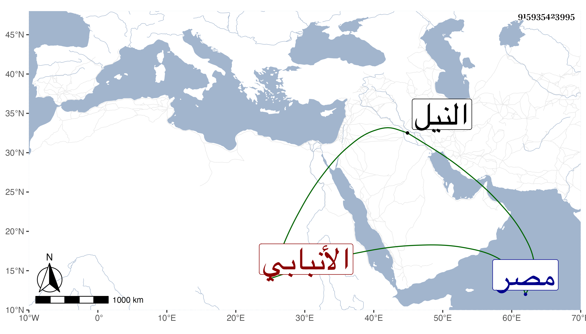

0902Sakhawi.DawLamic.ITO20230111-ara1.EIS1600.915935423995
Biography ID: 915935423995
الأنبابي نسبة لأنبابة قرية من بحري جيزة مصر على شاطئ النيل انتسب إليها جماعة من المتأخرين وربما قيل لها أنبوبة على وزن أفعولة وكأنه لما يزرع بها من القصب فالأنبوبة ما بين كل عقدتين من القصب ومن أشهر المنسوبين إليها اسمعيل بن يوسف بن اسمعيل وعلي ومحمد ابنا أبي بكر بن محمد بن محمد ولثانيهما بدر الدين محمد .
